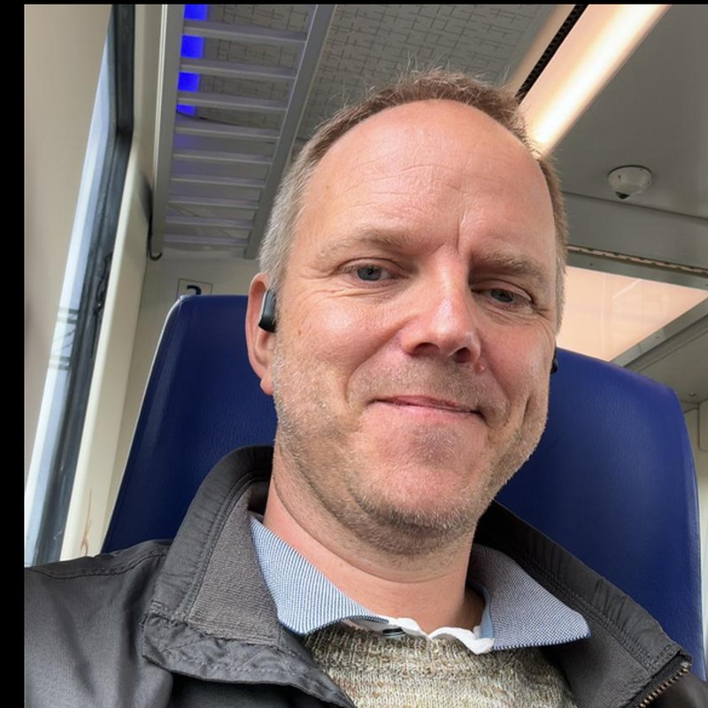
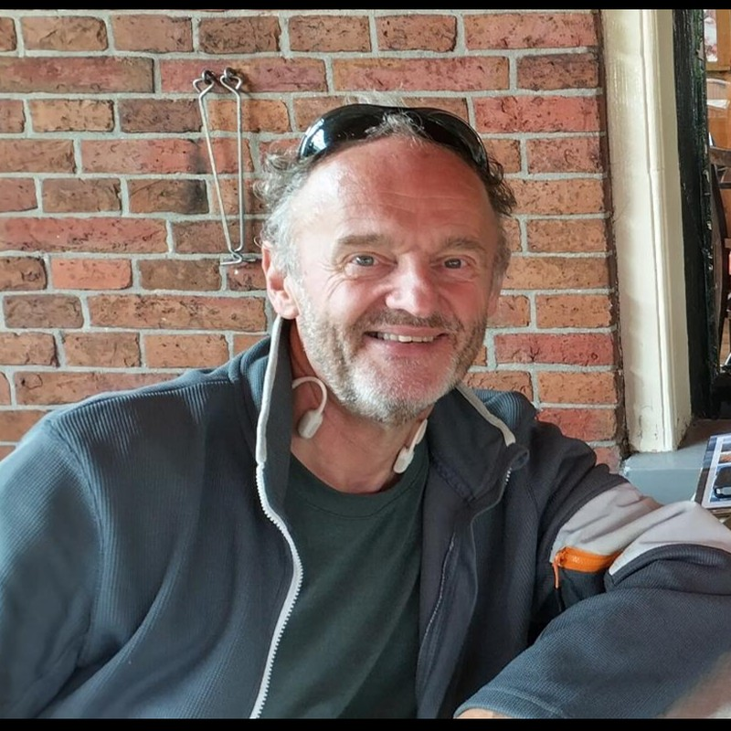

FOSDEM 2027 — Open Smart Home Devroom CFP
30–31 January 2027 · Brussels, Belgium · Exact devroom day to be announced
Connecting ecosystems. Returning control.
The Call for Papers for the Open Smart Home Devroom will open around 27 October 2026.
Modern smart homes are built from much more than a single automation platform. They combine connected devices, open firmware, communication protocols, message brokers, orchestration, data storage, observability, edge intelligence, energy management and self-hosted infrastructure.
The Smart Homes Devroom brings these layers — and the communities behind them — together. We invite proposals that demonstrate how Free and Open Source Software can create smart homes that are interoperable, local-first, privacy-respecting, resilient and free from vendor lock-in.
If you are building, integrating, debugging, reverse-engineering or experimenting with open smart-home technology, we would like to hear from you.
What We’re Looking For
We welcome submissions covering topics including, but not limited to:
- Platforms & automation: home automation platforms, architectures, orchestration, workflow tools and integrations.
- Devices & embedded systems: open hardware, embedded systems, sensors, actuators and device firmware.
- Interoperability & messaging: Matter, Thread, Zigbee, Z-Wave, MQTT, event-driven infrastructure, protocol bridges and gateways.
- Infrastructure & self-hosting: homelabs, message brokers, storage, networking, monitoring, observability and data visualisation.
- Sensing & edge intelligence: local voice assistants, edge AI, computer vision, presence and occupancy detection.
- Energy: energy monitoring and optimisation, solar integration, batteries, smart EV charging and energy-aware automation.
- Privacy, security & resilience: local-first and offline operation, security, reliability, long-term maintainability and liberation of cloud-dependent devices.
- Real-world implementations: integrations across different layers, failures, trade-offs, migrations and lessons learned.
- Emerging technologies: projects and ideas that could shape the future of open smart homes.
We particularly value talks that address a clearly defined problem, demonstrate working integrations, explain architectural decisions and trade-offs, share concrete experience, or provide knowledge that others can reuse.
Project introductions are welcome, especially for projects that may be unfamiliar to the wider FOSDEM audience. Please go beyond a feature overview: explain the problem being solved, the technical approach and what attendees can learn from it.
Who Should Submit
Developers, maintainers, contributors, researchers and experienced enthusiasts are all welcome. Both professional and hobbyist perspectives are valuable, provided the subject is rooted in Free and Open Source Software.
First-time speakers are explicitly welcome. You do not need to represent a large project or company. If you solved an interesting problem, connected technologies that were not designed to work together, learned something useful from a failed approach, or built something others can reproduce, there may be a talk in it.
Talks should be technically meaningful while remaining understandable to people who may not yet know every part of the smart-home stack. Please make the intended audience, assumed knowledge and key takeaways clear in your proposal. Demos are welcome.
Talk Format
Standard talk — 30-minute slot
25 minutes presentation · 3 minutes Q&A · 2 minutes changeover.
Best suited to technical deep dives, architectures, integrations, project developments and substantial real-world lessons.
Short talk — 15-minute slot
10 minutes presentation · 3 minutes Q&A · 2 minutes changeover.
Best suited to focused technical topics, compact demos, small projects, experiments, one strong idea or a concise lesson learned.
Choose the format that best fits your proposal. The organisers may suggest the other format when building the final programme.
How to Submit
Talks will be submitted through the official FOSDEM 2027 Pretalx system. The direct submission link will be added here as soon as FOSDEM opens the talk CFP, expected around 27 October 2026.
Your submission should include:
- Your name and short biography
- Contact information
- Talk title
- A concise abstract explaining the problem, technical approach and what attendees will learn
- Intended audience and assumed knowledge
- Your preferred format: Standard Talk or Short Talk
- Relevant project, repository or documentation links where applicable
Important Dates
- ~27 October 2026Call for Papers opens
- 24 November 2026Submission deadline · 23:59 CET
- 29 November 2026Speakers notified
- 2 December 2026Accepted speakers asked to confirm
- 30–31 January 2027FOSDEM 2027 · exact Smart Homes Devroom day TBA
Technical, Open and Non-Commercial
The Smart Homes Devroom is strictly non-commercial. Vendor-neutral technical contributions are welcome, but product pitches, sales presentations and marketing-led talks are not.
Proposals will be evaluated on their technical substance, openness, relevance, originality and value to the FOSDEM community.
Volunteering
A team of six volunteers has already committed to help staff the Smart Homes Devroom throughout the day. Additional help is welcome. If you would like to support speaker preparation, room operations, timekeeping or transitions, contact the organisers.
FOSDEM itself also runs on volunteers. You can register through the official FOSDEM volunteer site.
Organisers
Joost Lekkerkerker
Open Home Foundation and open-source smart-home community.

Maarten Raeymaekers
Independent smart-home enthusiast and enterprise-software solutions consultant.

Arjen Moermans
Independent smart-home enthusiast and enterprise-software solutions consultant.
Contact
Maarten Raeymaekers — mraeymaekers@gmail.com
Arjen Moermans — arjen@moermans.net
Joost Lekkerkerker — joost.lekkerkerker@openhomefoundation.org
Our Goal
Our goal is not simply to present isolated projects. We want to reveal how the pieces fit together, encourage collaboration across communities and help build a smart-home ecosystem that connects technology while returning control to its users.